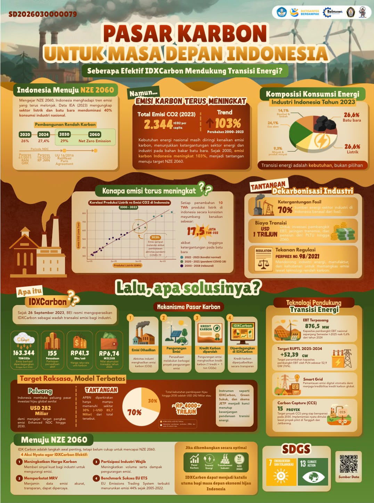

View full posterIndonesia’s carbon market,
explained through data.
A team study of CO₂ emissions and energy consumption, translated into an infographic about IDXCarbon and Indonesia’s energy transition.
R / Statistical analysis / Data visualization
Read project notes
Context. Statistics Infographic Challenge, SATRIA DATA 2026. The work connects Indonesia’s emissions trends, industrial energy consumption, and the role of carbon markets.
My contribution. Statistical analysis in R as part of a team, and translating the findings into the final infographic.
Output. The complete poster is available above, including its source-data QR code.
Download the poster ↗